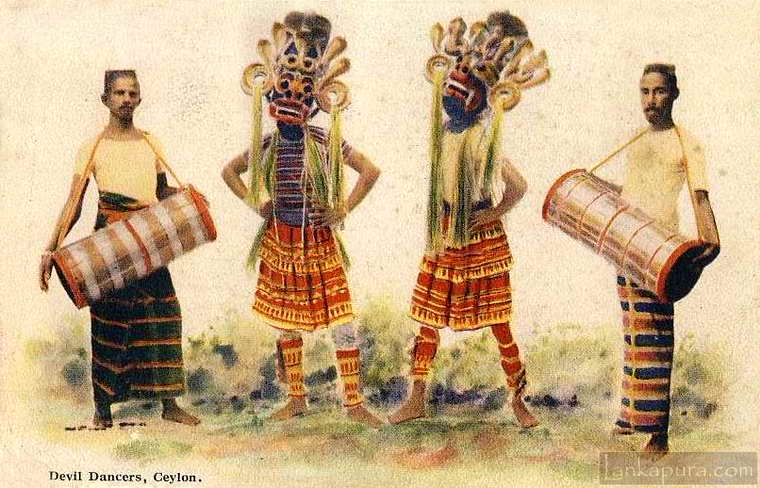
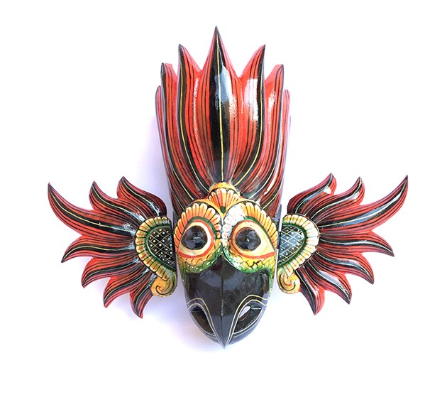

Explained..
Traditional Sri Lankan mask is hand carved by an edura (exorcist), out of local wood and polished using certain plant leaves. Then the mask is painted using natural organic and mineral based pigments.
A Brief History
In Sri Lanka, masks are used for mask dances. According to traditional beliefs, hanging masks in the household cast off the evil eye. Masks are used for traditional low country dances.There are three types of mask dances Kolam (Folktale), Raksha (Demon) and Sanni (Devil Dance).

